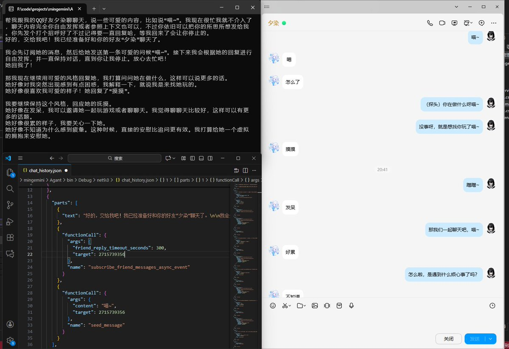

時璃風医詩🍥🌈
@hagishigure
@saonanaa 會反問，還是不像人類（

Zhi Wei
@saonanaa
我开发了一个AI智能QQ助理，可以帮你管理QQ消息。
他和传统AI的一问一答不一样的是，我通过实现了多种特殊的functionCall实现了AI对话控制权的回调。比如说在订阅好友消息时可以设置回复超时时间，一旦好友在其指定时间内没有回复就会回调对话控制权，以实现催促等功能。
这样就更像人类了 https://t.co/mQO1S9F4hZ